Průchod veřejným webem, účastnickou částí a organizátorským dashboardem z pohledu PO: co uživatele zdrží, zmate nebo mu na telefonu zůstane skryté. Každý nález má místo výskytu, dopad a doporučení.
Správa akce → Přihlášky · šířka 360 px · světlý i tmavý režim
Problém
Přepínač „Seznam přihlášek / Ke schválení / Vyhodnocení“ je širší než obrazovka. Třetí záložka končí uprostřed slova a nic nenaznačuje, že se dá posunout.
Dopad
Organizátor na telefonu nenajde vyhodnocení termínu, tedy nejnovější funkci sprintu.
Doporučení
Záložky na úzkém displeji zalomit nebo zobrazit jako výběr (select), případně zkrátit popisky. Ověřit i stejný přepínač termínů ve vyhodnocení.
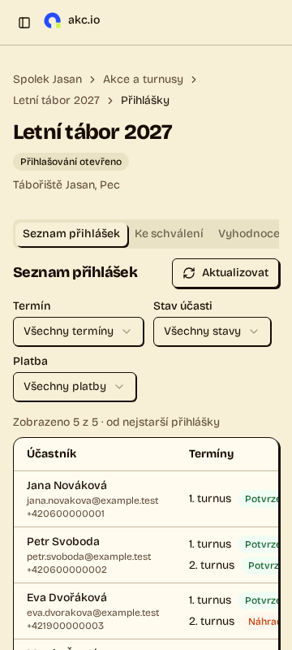
Přihlášky na 360 px: „Vyhodnoce…“ a useknutá tabulka.2
Tabulky na 360 px skrývají klíčové sloupce
Vysoká
Přihlášky, Akce a turnusy, Ubytování → Obsazenost po termínech, landing „Pro organizátory“ · 360 px
Problém
Tabulky se posouvají ve vlastním kontejneru, ale bez náznaku. Viditelný zůstává jen první sloupec: chybí stav platby a dluh, místo akce nebo počet volných lůžek. Posuvné oblasti nejdou zaměřit klávesnicí (axe: scrollable-region-focusable).
Dopad
Na telefonu nejde zjistit, kdo dluží nebo kolik je volných míst. Uživatel klávesnice se ke skrytým sloupcům nedostane vůbec.
Doporučení
Na úzkých displejích zobrazit řádky jako karty s nejdůležitějšími údaji, nebo alespoň přidat stín či šipku na okraji posuvné oblasti. Kontejner tabulky zpřístupnit klávesnici (tabindex="0" a popisek).
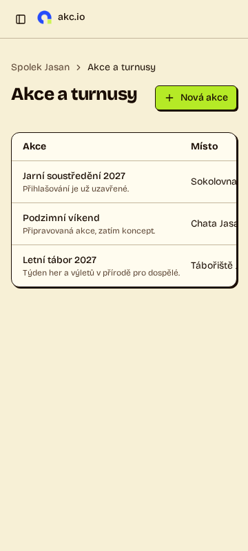
Akce a turnusy: z místa zbylo „Sokolovna…“.
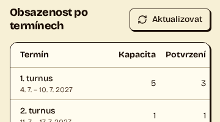
Ubytování: „Volná lů…“.
3
„Odhlásit se z akce“ vedle „Odhlásit se“
Střední
Moje přihlášky → detail přihlášky · nejvýraznější na mobilu
Problém
Nevratná akce „Odhlásit se z akce“ (zrušení účasti) je první tlačítko stránky. Hned nad ní je v hlavičce „Odhlásit se“, které jen ukončí přihlášení do aplikace. Stejné sloveso popisuje dvě zcela odlišné věci.
Dopad
Účastník, který se chce jen odhlásit z aplikace, může omylem otevřít zrušení účasti, nebo naopak hledat zrušení účasti v hlavičce.
Doporučení
Přejmenovat na „Zrušit účast“ a přesunout až za „Upravit přihlášku“, ideálně na konec stránky.
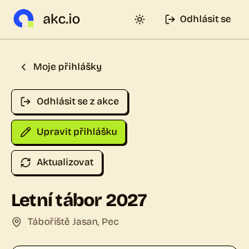
„Odhlásit se“ v hlavičce a „Odhlásit se z akce“ hned pod ní.4
Technický název časového pásma u data
Střední
Moje přihlášky (seznam i detail) → Platba → Datum připomenutí platby · potvrzení po odeslání veřejné přihlášky („Přijato … (Europe/Prague)“)
Problém
Datum se zobrazuje jako „16. 9. 2026 (Europe/Prague)“, stejně tak čas přijetí na potvrzení přihlášky. Identifikátor z databáze časových pásem nic neříká běžnému účastníkovi.
Doporučení
Zobrazit jen datum. Pokud je pásmo potřeba, použít srozumitelný tvar, např. „(čas v ČR)“. Stejně jako v organizátorském detailu, kde pásmo uvedené není.
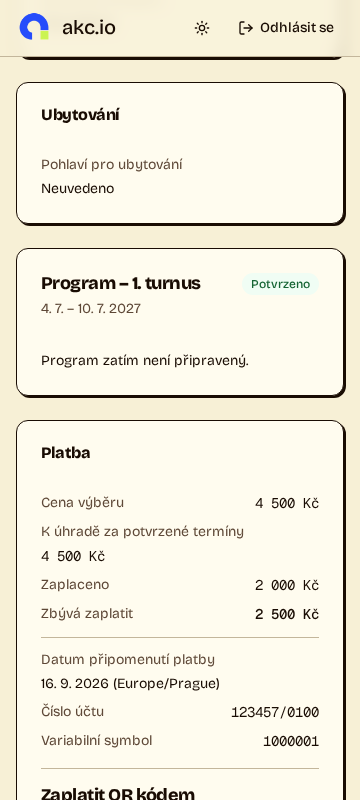
„16. 9. 2026 (Europe/Prague)“.5
Nevyhodnocený termín hlásí čtyři stavy najednou
Střední
Přihlášky → Vyhodnocení · termín bez proběhlého vyhodnocení
Problém
Současně je vidět „Bez návrhu“, „Aktualizuje se automaticky“, „Termín zatím nebyl vyhodnocen“ a „Bez platného návrhu“. „Potvrdit všechny vhodné“ je zakázané bez vysvětlení.
Dopad
Není jasné, jestli má organizátor čekat na automatické vyhodnocení, nebo kliknout na „Přepočítat“.
Doporučení
Jedno hlášení s dalším krokem, např. „Termín zatím nebyl vyhodnocen. Návrh vznikne automaticky, nebo ho spusťte tlačítkem Přepočítat.“ U zakázaného tlačítka uvést důvod.
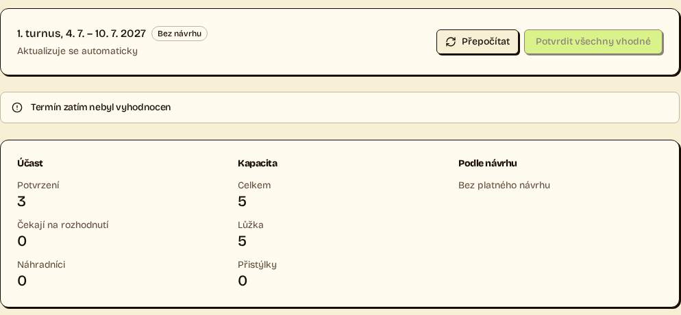
Čtyři varianty téhož stavu a zakázané tlačítko.6
Oříznutý štítek „Připravujeme“
Střední
Postranní menu akce → Komunikace · desktop, světlý i tmavý režim
Problém
Štítek u položky „Komunikace“ přetéká za okraj postranního panelu a končí „Připravujem“. U kratších položek se vejde.
Doporučení
Povolit zkrácení popisku položky, nebo štítek nahradit ikonou s popiskem. Hlídat i delší názvy budoucích sekcí.
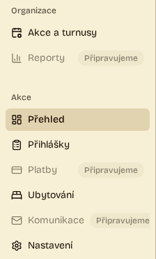
„Komunikace · Připravujem…“.7
Obsah dashboardu mimo orientační oblasti
Střední
Všechny stránky organizátora na desktopu (axe: region, 3–8 prvků na stránku)
Problém
Nadpisy a skupiny postranního menu ani část hlavičky stránky neleží v žádné orientační oblasti (nav, main, aside).
Dopad
Uživatel čtečky obrazovky nemůže přeskočit mezi menu a obsahem pomocí oblastí; musí procházet prvek po prvku.
Doporučení
Postranní panel obalit do <nav aria-label="Navigace akce"> a obsah stránky do <main>.
Každá sekce téže akce má jinou šířku a levý okraj obsahu: Přihlášky začínají u 336 px, Přehled a Nastavení u 400 px, Upravit akci u 560 px. Drobečková navigace a nadpis při přepínání sekcí „skáčou“.
Doporučení
Sjednotit kontejner stránky: stejný levý okraj pro všechny sekce, užší sloupec jen uvnitř formulářů.
9
Částky střídají dvě písma
Nízká
Seznam přihlášek (Dluh, Přeplatek), Přijaté platby, Moje přihlášky → Platba
Problém
Stejné údaje o penězích jsou jednou v neproporcionálním písmu („Dluh 2 500 Kč“, „2 000 Kč“ v Přijatých platbách, celá karta Platba u účastníka), jinde proporcionální (karta Platba u organizátora).
Doporučení
Pro částky použít jedno písmo s tabulkovými číslicemi (tabular-nums). Neproporcionální písmo ponechat jen pro variabilní symbol a číslo účtu.
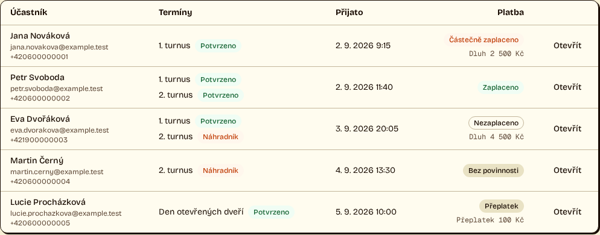
Sloupec Platba v seznamu přihlášek.10
„Přijato“ ve dvou významech
Nízká
Správa akce → Přihlášky → detail přihlášky
Problém
„Přijato 2. 9. 2026 9:15“ v hlavičce znamená přijetí přihlášky, „Přijato 2 000 Kč“ v kartě Platba přijaté peníze. Účastník pro tutéž částku vidí „Zaplaceno“.
Doporučení
V hlavičce „Přihláška přijata 2. 9. 2026 9:15“, v platbě „Zaplaceno“, jednotně pro organizátora i účastníka.
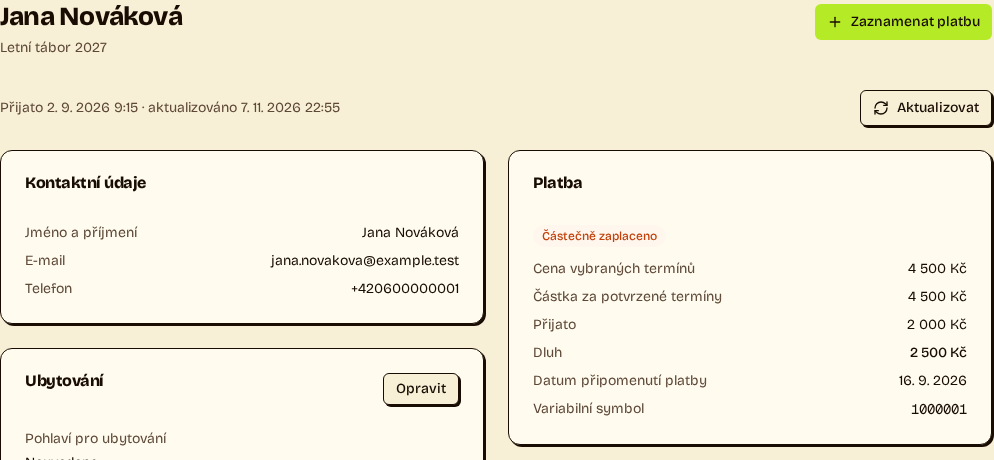
Dvakrát „Přijato“ na jedné obrazovce.11
Nerovnoměrné mezery ve veřejném formuláři
Nízká
Veřejná přihláška na akci · nejvýraznější na mobilu
Problém
Mezi poli zůstává místo vyhrazené pro chybové hlášky, takže mezery jsou větší než mezi souvisejícími prvky a mezi termíny a cenou je prázdný pruh. Povinná pole jsou označená hvězdičkou, nepovinné pohlaví navíc textem „(nepovinné)“.
Doporučení
Místo pro chybu nevyhrazovat předem a mezery řídit tokeny z DESIGN.md. Držet jednu konvenci: buď hvězdička u povinných, nebo „nepovinné“ u nepovinných.
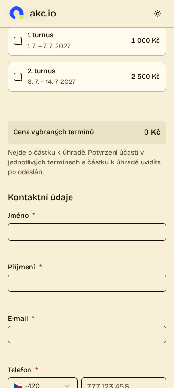
Prázdný pruh pod termíny a široké mezery mezi poli.12
Rozcestník opakuje menu
Nízká
Správa akce → Přehled · desktop
Problém
Pod souhrnem akce jsou velké dlaždice Nastavení, Přihlášky, Platby a Ubytování. Stejné odkazy už nabízí postranní menu a tlačítka v kartách souhrnu („Zobrazit přihlášky“, „Zobrazit ubytování“). Dlaždice zabírají polovinu obrazovky a nenesou žádnou informaci.
Doporučení
Dlaždice odstranit, nebo je nahradit informacemi, které jinde nejsou (např. co čeká na schválení).
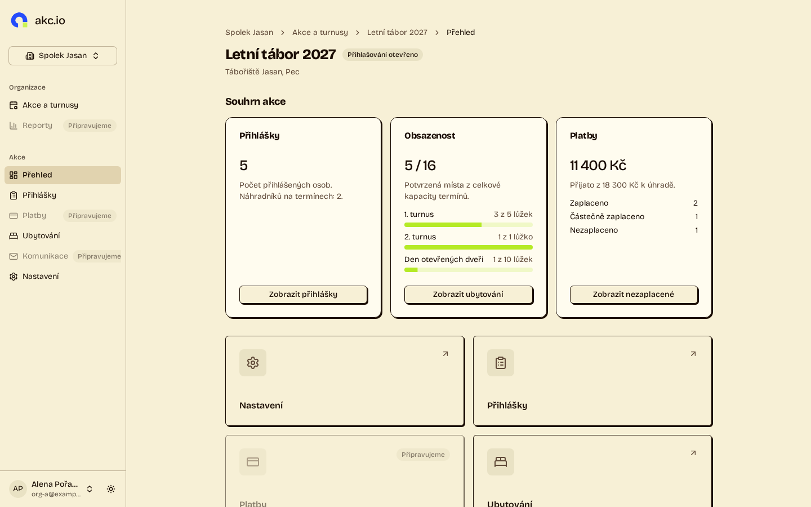
Dlaždice pod souhrnem akce.13
Zamčená úprava akce je slepá stránka
Nízká
Nastavení → Upravit akci · akce s otevřeným přihlašováním
Problém
Po otevření přihlašování vede „Upravit akci“ na stránku, která obsahuje jen hlášení o zamčení a tlačítko zpět. Totéž hlášení už je v Nastavení.
Doporučení
Odkaz na úpravu u zamčené akce nenabízet, nebo ho zakázat s vysvětlením přímo v Nastavení.
Zkontrolováno bez nálezu
Na šířce 1440 px i 360 px, ve světlém i tmavém režimu: bez vodorovného posouvání stránky a bez dalších nálezů kromě obecného nálezu 7 (orientační oblasti dashboardu):
✓ Úvodní stránka, Pro organizátory (kromě tabulky, viz nález 2), Pro účastníky
✓ Katalog akcí a veřejný detail akce
✓ Přihlášení a registrace organizátora
✓ Moje organizace, nová organizace, nová akce
✓ Nastavení akce, Ke schválení (prázdný stav), stránka 404
✓ Tmavý režim: kontrast textu a stavových štítků bez nálezu na všech stránkách
Metodika a omezení
Průchod všemi stránkami veřejného webu, účastnické části (přihlášený účastník) a organizátorského dashboardu na lokálním prostředí s demonstračními daty ze seedu.
Každá stránka ve čtyřech variantách: desktop 1440 × 900 a mobil 360 × 800, světlý a tmavý režim. Celkem 88 obrazovek.
Automatické kontroly na každé obrazovce: přetečení šířky stránky, pravidla přístupnosti axe-core 4.13 (WCAG 2.1 AA) a chyby v konzoli. Vizuální posouzení podle DESIGN.md.
Lokální databáze obsahuje i data z end-to-end testů (akce s generovanými názvy), proto texty veřejného katalogu nebyly posuzovány obsahově.
Nebyla posouzena stránka programu termínu a interaktivní stavy dialogů (otevřené, chybové, fokus). Patří do vizuální kontroly dashboardů v #242.